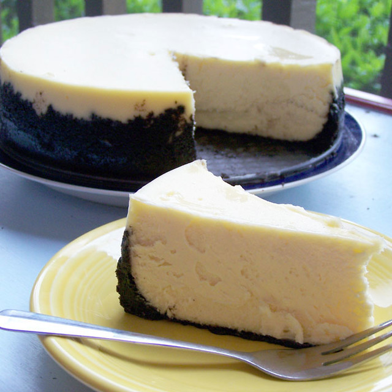

Cheesecake

Description
This cheesecake recipe is the only one that you will ever need!
I took a screenshot of it, so sadly I don't know where the recipe is from. This is why I am here to explain!
Ingredients
- butter (100g)
- biscuits (200g)
- cream cheese (600g)
- low-fat quark (200g)
- sugar (200g)
- starch (3 tablespoons)
- egg (1 large)
- cream (150g)
- lemon juice (2 tablespoons)
Steps
- Preheat the oven to 180°C.
- For the bottom, melt the butter in a pan, pulverize the piscuits and mix them together. Spread on a 26cm round pan.
- For the filling, whip together the cream cheese, quark, sugar and starch until creamy.
- Carefully fold in the egg, cream and lemon juice.
- Spread evenly on the pan and bake in the oven for 45 minutes until the edge is golden brown.
Back to main page